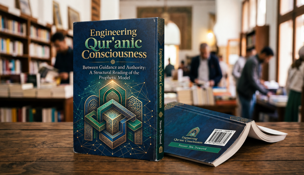

Nasser Ibn Dawood

Text extracted from the author-supplied Word edition; consult the original source.
Preparing the reader…
ENGINEERING QUR’ANIC CONSCIOUSNESS
Between Guidance and Authority
A Structural Reading of the Prophetic Model of Muhammad
Condensed Conceptual English Adaptation
Nasser Ibn Dawood
Open-access research edition
nasserhabitat.github.io/nasser-books/
This edition presents the conceptual architecture of the Arabic original in accessible English.
The Arabic edition remains the primary source for the complete linguistic argumentation and documentation.
I. The Global Knowledge Manifesto
Knowledge is a universal right. The author firmly believes that wisdom should not be locked behind paywalls or language barriers.
Global Access Policy: All books in this library are available for free in multiple digital formats (PDF, HTML, DOCX, TXT).
The Digital Library: As of early 2026, the collection hosts 68 volumes (34 in Arabic and 34 in English), fully optimized for AI-assisted research and digital archiving.
Official Platforms: Main Website: nasserhabitat.github.io/nasser-books/
GitHub: nasserhabitat/nasser-books
◆ ◆ ◆
II. Translator’s Note: The Bridge of Meaning
This English edition is a condensed conceptual adaptation. It is not a word-for-word translation, but rather an "extraction of essence." It presents the core philosophical framework in accessible English, omitting the exhaustive linguistic debates and classical references found in the original Arabic text.
For the academic researcher: The original Arabic version remains the primary source for comprehensive linguistic analysis, detailed exegesis (Tafsir), and the complete bibliography.
Contents
Preface — Why This Book Was Written
1. The Central Question: Guidance or Guardianship?
2. Method: Reading the Qur’an as an Integrated Semantic System
3. Reconstructing the Foundational Vocabulary
4. From the Message to the Human Model
5. Governance as Human Stewardship, Not Sacred Possession
6. The Prophetic Community of Madinah
7. The Limits of Prophetic Authority
8. From “Divine Rule” to Citizenship and Public Justice
9. Peace, Violence, and the Protection of Human Security
10. Wealth, Circulation, and Economic Justice
11. Family, Gender, and the Ethics of Partnership
12. Religious Authority, Tradition, and the Right to Reflect
13. The Qur’an as an Operating System for Consciousness
Conclusion — Toward an Islam Without Guardianship
Conceptual Map and Glossary
Preface — Why This Book Was Written
This book begins from a diagnosis. The author argues that a major part of the modern Muslim intellectual crisis does not arise from a shortage of sacred text, nor from the absence of religious vocabulary, but from a structural problem in the way the relationship between the Qur’an, inherited interpretation, political power, and human responsibility has been organized over time. The question is therefore not simply, “What does Islam say about the state?” It is more basic: “How does the Qur’an organize the relationship between divine guidance and human agency?”
The central thesis is that two domains must be distinguished without being torn apart. The first is the domain of divine guidance: revelation, moral orientation, ultimate meaning, accountability before God, and the formation of conscience. The second is the domain of human administration: institutions, public policy, lawmaking procedures, economic management, social contracts, and political arrangements. The first draws its authority from revelation; the second remains a human field of judgment, consultation, experience, revision, and accountability.
In the author’s reading, many historical confusions began when these two domains were fused. Human institutions acquired sacred status, political obedience became religious obedience, inherited interpretations were treated as if they were revelation itself, and the believer was gradually repositioned from a responsible moral agent into a dependent subject. The book therefore attempts a reverse engineering of this process: it starts with key Qur’anic terms, traces the semantic shifts that affected them, and asks what happens when they are returned to the internal architecture of the Qur’anic discourse.